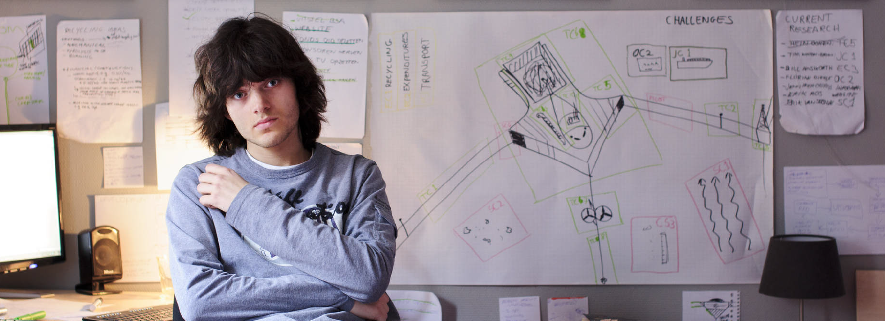
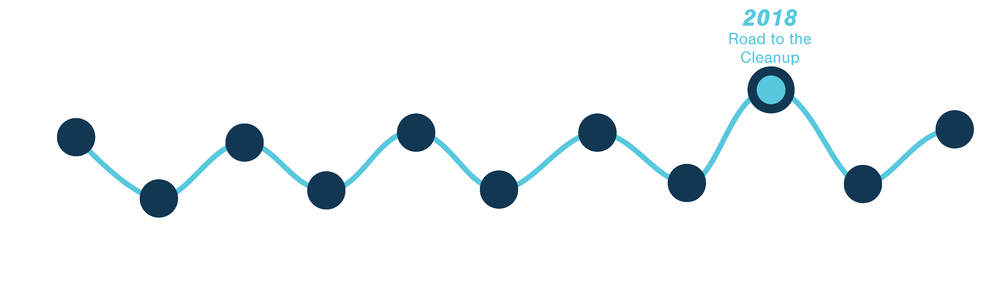

How it began
It all started when then 16-year-old Boyan Slat was scuba diving in Greece and was surprised to see more
plastic than fish. What surprised him even more, after digging deeper into the plastic pollution problem,
was no one had made serious attempts to combat this issue. The question “Why don’t we just clean it up?”
lingered in his mind, and led him to devote his high school science project to understanding the problem, as
well as researching why a cleanup was considered impossible.
It quickly became clear that a cleanup using vessels and nets would take thousands of years, cost tens of
billions of dollars, be harmful to sea life and lead to large amounts of carbon emissions.
There are 5 major plastic accumulation zones in the world where ocean currents converge. These accumulation
zones are commonly called "garbage patches". The vast majority of ocean plastic will not go away by itself
but instead slowly break
down into microplastics. After a year of experimenting with ideas and simple tests, Boyan came up with the
idea to develop a passive concentration system. He envisioned to use the ocean currents to his advantage,
and let them be the driving force behind catching and concentrating the plastic. Instead of going after the
plastic, you could let the plastic come to you.
After graduating high school, he was invited to present his initial idea at a TEDx conference in 2012:
Initially, his idea did not gain traction. Boyan had just started studying Aerospace Engineering at TU Delft
but continued working out his concept in parallel. After 6 months, he decided to quit his studies and
founded The Ocean Cleanup, with just 300 euros of savings as a starting capital. Then one night in March
2013, things changed. The TEDx video was picked up by several news sites, from which it spread to hundreds
of thousands of people. The idea went viral. In a matter of days, it allowed The Ocean Cleanup to recruit an
initial team, as well as raise the first USD 90,000 using crowdfunding. And so, The Ocean Cleanup project
took off.


About CleanUp
The Ocean Cleanup is a non-profit organization, developing advanced technologies to rid the world’s
oceans of plastic.
By utilizing the ocean currents to our advantage, our passive drifting systems are estimated to clean up
half the Great Pacific Garbage Patch in 5 years’ time.
The Ocean Cleanup is designing and developing the first feasible method to rid the world’s oceans of
plastic. Every year, millions of tons of plastic enter the ocean. A significant percentage of this
plastic drifts into large systems of circulating ocean currents, also known as gyres. Once trapped in a
gyre, the plastic will break down into microplastics and become increasingly easier to mistake for food
by sea life.
Going after it with vessels and nets would be costly, time-consuming, labor-intensive and lead to vast
amounts of carbon emission and by-catch. That is why The Ocean Cleanup is developing a passive system,
moving with the currents - just like the plastic - to catch it. The system consists of a 600-meter-long
floater that sits at the surface of the water and a tapered 3-meter-deep skirt attached below. The
floater provides buoyancy to the system and prevents plastic from flowing over it, while the skirt stops
debris from escaping underneath. As the system moves through the water, the plastic continues to collect
within the boundaries of the U-shaped system.


Project Timeline
